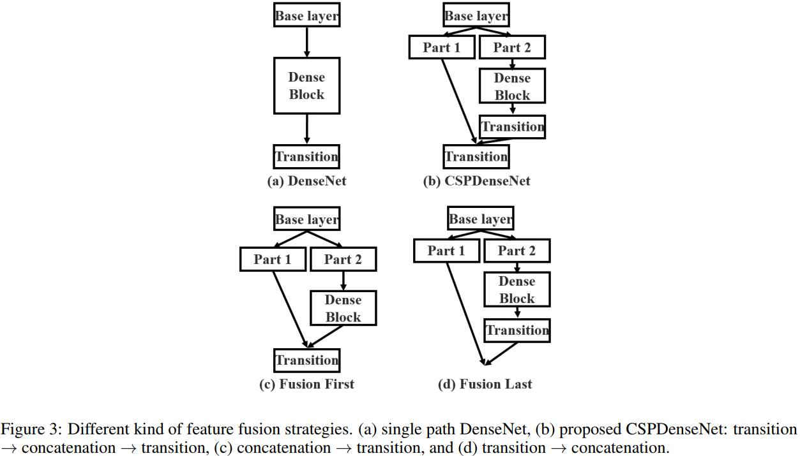
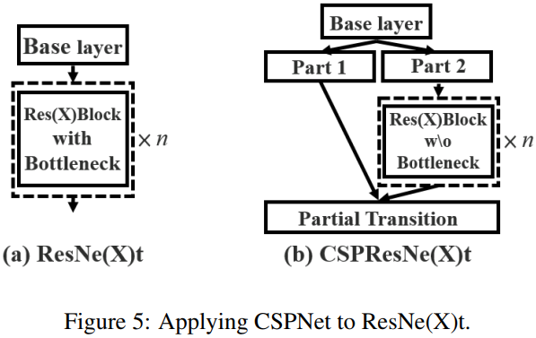

文章同步发于 github、博客园 和 知乎。最新版以
github为主。如果看完文章有所收获，一定要先点赞后收藏。毕竟，赠人玫瑰，手有余香。
摘要
CSPNet是作者Chien-Yao Wang于2019发表的论文CSPNET: A NEW BACKBONE THAT CAN ENHANCE LEARNING CAPABILITY OF CNN。也是对DenseNet网络推理效率低的改进版本。
作者认为网络推理成本过高的问题是由于网络优化中的梯度信息重复导致的。CSPNet 通过将梯度的变化从头到尾地集成到特征图中，在减少了计算量的同时可以保证准确率。CSP（Cross Stage Partial Network，简称 CSPNet） 方法可以减少模型计算量和提高运行速度的同时，还不降低模型的精度，是一种更高效的网络设计方法，同时还能和Resnet、Densenet、Darknet 等 backbone 结合在一起。
1，介绍
虽然已经出现了 MobileNetv1/v2/v3 和 ShuffleNetv1/v2 这种为移动端（CPU）设计的轻量级网络，但是它们所采用的基础技术-深度可分离卷积技术并不适用于 NPU 芯片（基于专用集成电路 (ASIC) 的边缘计算系统）。
CSPNet 和不同 backbone 结合后的效果如下图所示。

和目标检测网络结合后的效果如下图所示。

CSPNet 提出主要是为了解决三个问题：
- 增强 CNN 的学习能力，能够在轻量化的同时保持准确性。
- 降低计算瓶颈和 DenseNet 的梯度信息重复。
- 降低内存成本。
2，相关工作
CNN 架构的设计。
实时目标检测器。
3，改进方法
原论文命名为
Method，但我觉得叫改进方法更能体现章节内容。
3.1，Cross Stage Partial Network
1，DenseNet

其中 $f$ 为权值更新函数，$g_i$ 为传播到第 $i$ 个密集层的梯度。从公式 (2) 可以发现，大量的度信息被重用来更新不同密集层的权值，这将导致无差异的密集层反复学习复制的梯度信息。
2，Cross Stage Partial DenseNet.
作者提出的 CSPDenseNet 的单阶段的架构如图 2(b) 所示。CSPDenseNet 的一个阶段是由局部密集块和局部过渡层组成（a partial dense block and a partial transition layer）。

总的来说，作者提出的 CSPDenseNet 保留了 DenseNet 重用特征特性的优点，但同时通过截断梯度流防止了过多的重复梯度信息。该思想通过设计一种分层的特征融合策略来实现，并应用于局部过渡层（partial transition layer）。
3，Partial Dense Block.
设计局部密集块（partial dense block）的目的是为了
- 增加梯度路径:通过分块归并策略，可以使梯度路径的数量增加一倍。由于采用了跨阶段策略，可以减轻使用显式特征图 copy 进行拼接所带来的弊端;
- 每一层的平衡计算:通常，DenseNet 基层的通道数远大于生长速率。由于在局部稠密块中，参与密集层操作的基础层通道仅占原始数据的一半，可以有效解决近一半的计算瓶颈;
- 减少内存流量: 假设
DenseNet中一个密集块的基本特征图大小为 $w\times h\times c$，增长率为 $d$，共有 $m$ 个密集块。则该密集块的 CIO为 $(c\times m) + ((m^2+m)\times d)/2$，而局部密集块（partial dense block）的CIO为 $((c\times m) + (m^2+m)\times d)/2$。虽然 $m$ 和 $d$ 通常比 $c$ 小得多，但是一个局部密集的块最多可以节省网络一半的内存流量。
4，Partial Transition Layer.
设计局部过渡层的目的是使梯度组合的差异最大。局部过渡层是一种层次化的特征融合机制，它利用梯度流的聚合策略来防止不同的层学习重复的梯度信息。在这里，我们设计了两个 CSPDenseNet 变体来展示这种梯度流截断是如何影响网络的学习能力的。

Transition layer 的含义和 DenseNet 类似，是一个 1x1 的卷积层（没有再使用 average pool）。上图中 transition layer 的位置决定了梯度的结构方式，并且各有优势：
- (c) 图 Fusion First 方式，先将两个部分进行 concatenate，然后再进行输入到Transion layer 中，采用这种做法会是的大量特梯度信息被重用，有利于网络学习；
- (d) 图 Fusion Last 的方式，先将部分特征输入 Transition layer，然后再进行concatenate，这样梯度信息将被截断，损失了部分的梯度重用，但是由于 Transition 的输入维度比（c）图少，大大减少了计算复杂度。
- (b) 图中的结构是论文
CSPNet所采用的，其结合了 (c)、(d) 的特点，提升了学习能力的同时也提高了一些计算复杂度。 作者在论文中给出其使用不同 Partial Transition Layer 的实验结果，如下图所示。具体使用哪种结构，我们可以根据条件和使用场景进行调整。

5，Apply CSPNet to Other Architectures.
将 CSP 应用到 ResNeXt 或者 ResNet 的残差单元后的结构图如下所示：

3.2，Exact Fusion Model
Aggregate Feature Pyramid.
提出了 EFM 结构能够更好地聚集初始特征金字塔。

4，实验
4.1，实验细节
略
4.2，消融实验
EFM 在 COCO 数据集上的消融实验结果。

4.3，实验总结
从实验结果来看，分类问题中，使用 CSPNet 可以降低计算量，但是准确率提升很小；在目标检测问题中，使用 CSPNet 作为Backbone 带来的精度提升比较大，可以有效增强 CNN 的学习能力，同时也降低了计算量。
5，结论
CSPNet 是能够用于移动 gpu 或 cpu 的轻量级网络架构。
作者认为论文最主要的贡献是认识到冗余梯度信息问题，及其导致的低效优化和昂贵的推理计算。同时也提出了利用跨阶段特征融合策略和截断梯度流来增强不同层间学习特征的可变性。
此外，还提出了一种 EFM 结构，它结合了 Maxout 操作来压缩从特征金字塔生成的特征映射，这大大降低了所需的内存带宽，因此推理的效率足以与边缘计算设备兼容。
实验结果表明，本文提出的基于 EFM 的 CSPNet 在移动GPU 和 CPU 的实时目标检测任务的准确性和推理率方面明显优于竞争对手。
6，代码解读
1，Partial Dense Block 的实现，代码可以直接在 Dense Block 代码的基础上稍加修改即可，代码参考 这里。简单的 Dense Block 代码如下：
class conv2d_bn_relu(nn.Module):
"""
BN_RELU_CONV,
"""
def __init__(self, in_channels: object, out_channels: object, kernel_size: object, stride: object, padding: object,
dilation=1, groups=1, bias=False) -> object:
super(BN_Conv2d, self).__init__()
layers = [nn.Conv2d(in_channels, out_channels, kernel_size=kernel_size, stride=stride,
padding=padding, dilation=dilation, groups=groups, bias=bias),
nn.BatchNorm2d(in_channels),
nn.ReLU(inplace=False)]
self.seq = nn.Sequential(*layers)
def forward(self, x):
return self.seq(x)
class bn_relu_conv2d(nn.Module):
"""
BN_RELU_CONV,
"""
def __init__(self, in_channels: object, out_channels: object, kernel_size: object, stride: object, padding: object,
dilation=1, groups=1, bias=False) -> object:
super(BN_Conv2d, self).__init__()
layers = [nn.BatchNorm2d(in_channels),
nn.ReLU(inplace=False),
nn.Conv2d(in_channels, out_channels, kernel_size=kernel_size, stride=stride,
padding=padding, dilation=dilation, groups=groups, bias=bias)]
self.seq = nn.Sequential(*layers)
def forward(self, x):
return self.seq(x)
class DenseBlock(nn.Module):
def __init__(self, input_channels, num_layers, growth_rate):
super(DenseBlock, self).__init__()
self.num_layers = num_layers
self.k0 = input_channels
self.k = growth_rate
self.layers = self.__make_layers()
def __make_layers(self):
layer_list = []
for i in range(self.num_layers):
layer_list.append(nn.Sequential(
bn_relu_conv2d(self.k0 + i * self.k, 4 * self.k, 1, 1, 0),
bn_relu_conv2d(4 * self.k, self.k, 3, 1, 1)
))
return layer_list
def forward(self, x):
feature = self.layers[0](x "0")
out = torch.cat((x, feature), 1)
for i in range(1, len(self.layers)):
feature = self.layers[i](out "i")
out = torch.cat((feature, out), 1)
return out
# Partial Dense Block 的实现：
class CSP_DenseBlock(nn.Module):
def __init__(self, in_channels, num_layers, k, part_ratio=0.5):
super(CSP_DenseBlock, self).__init__()
self.part1_chnls = int(in_channels * part_ratio)
self.part2_chnls = in_channels - self.part1_chnls
self.dense = DenseBlock(self.part2_chnls, num_layers, k)
trans_chnls = self.part2_chnls + k * num_layers
self.transtion = conv2d_bn_relu(trans_chnls, trans_chnls, 1, 1, 0)
def forward(self, x):
part1 = x[:, :self.part1_chnls, :, :]
part2 = x[:, self.part1_chnls:, :, :]
part2 = self.dense(part2) # 也可以是残差块单元
part2 = self.transtion(part2) # Fusion lirst
out = torch.cat((part1, part2), 1)
return out